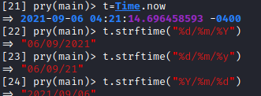
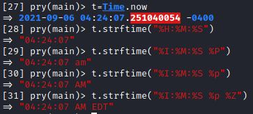
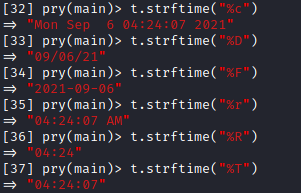

format time (strftime method)
We can format the Time objects with
strftime method according to the directives in the given format string
Format dates directives%Y → Year with century (2005)
%y → Year module 100 (05,06,…)
%m → Month of the year (01..12)
%-m → No padded moth (1..12)
%d → Day of the month (01..31)
%-d → No padded day (1..31)
%j → Day of the year
%U ,%W → Week number of the year
Format time directives%H → 24-hour of the day
%I → 12-hour of the day
%p,%P → Meridian indicator: am, pm
%M → Minute of the hour
%S → Second of the minute
%Z, %z → Time zone directives
%A → Weekday name (full)
%a → Abbreviated weekday name
Shortcut Directives%c → date and time (%a %b %e %T %Y)
%D → Date (%m/%d/%y)
%F → ISO 8601 (%Y-%m-%d)
%r → 12-hour time (%I:%M:%S %p)
%R → 24-hour time (%H:%M)
%T → 24-hour time with seconds (%H:%M:%S)
